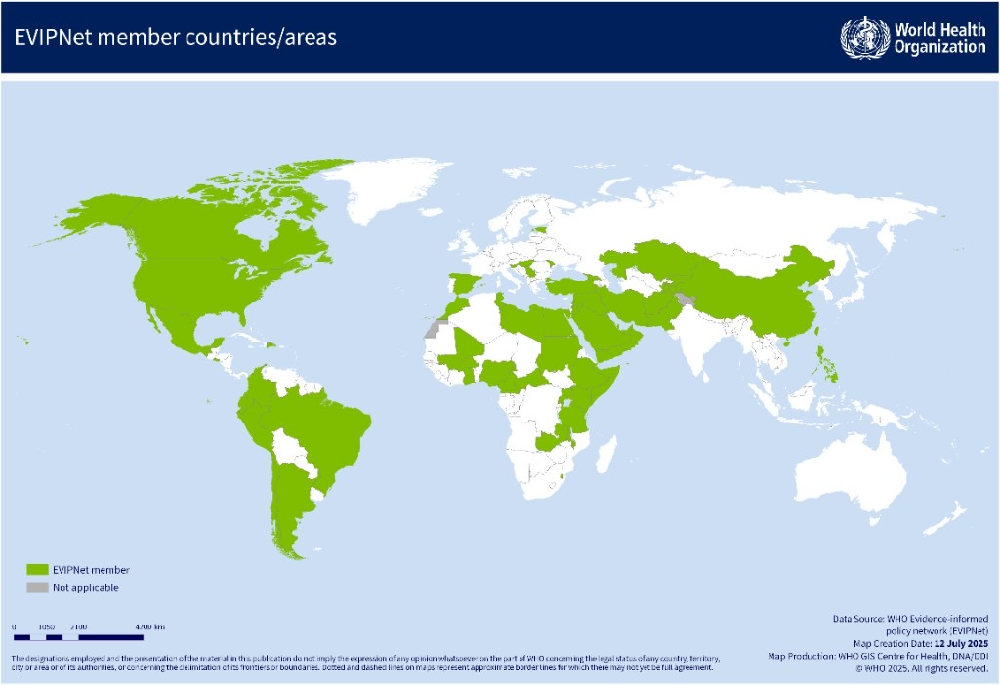
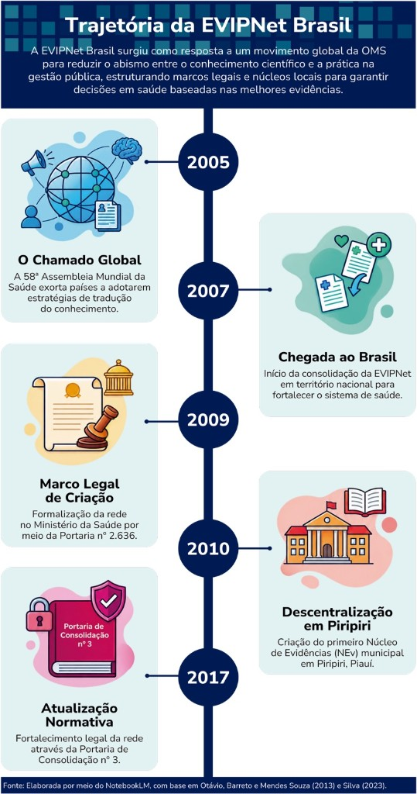

Módulo 1 | Aula 2
Contextualização Histórica: a EVIPNet no Mundo e no Brasil
A rede Evidence Informed Policy Network (EVIPNet)
Nas últimas décadas do século XX e início do século XXI, houve um aumento expressivo na produção de pesquisas em saúde e esse período foi marcado pela criação de organizações que teriam grande importância para a amplificação do movimento de políticas baseadas em evidências. São exemplos:
- Cochrane CollaborationFormada em 1993, que estabeleceu o padrão para revisões sistemáticas na área de saúde. Essa organização desenvolveu metodologias rigorosas para sintetizar evidências de múltiplos estudos, criando uma infraestrutura global para a produção e disseminação de evidências.
- Campbell ColaborationFormalmente estabelecida na Filadélfia em 2000, com desenvolvimento similar à Cochrane nas áreas de políticas sociais e educacionais.
- Centre for Evidence-Based MedicineFocado em revisões sobre a pandemia de coronavírus, com submissões de revisões rápidas de evidências, análises de dados e textos que estimulam a reflexão em relação à pandemia de coronavírus, realiza pesquisas sistemáticas e regulares para estudos, avaliando a qualidade e suas implicações. É controlado editorialmente por acadêmicos do Centro de Medicina Baseada em Evidências da Universidade de Oxford.
Se quiser saber mais sobre essas organizações acesse os sites clicando nos links a seguir:
Estudos produzidos pela Cochrane
Como você viu na aula 1 deste módulo, redes de pesquisa em PIE são intermediárias de evidências criadas para facilitar a ponte entre pesquisa e política, promovendo síntese, disseminação e uso de evidências.
A rede EVIPNet foi formalmente criada em 2005, mas tudo começou em 2004, na Cúpula Ministerial de Pesquisa em Saúde, organizada pelo governo do México e pela OMS. Na ocasião, ministros da saúde de países de baixa e média renda enfatizaram a necessidade de mais atenção à superação da lacuna entre pesquisa, políticas e prática.
Como consequência, a 58ª Assembleia Mundial da Saúde aprovou, em maio de 2005, uma resolução que preconizava o "estabelecimento ou fortalecimento de mecanismos de transferência de conhecimento para apoiar sistemas de prestação de serviços de saúde pública e políticas de saúde baseados em evidências". Isso resultou no desenvolvimento e no lançamento da EVIPNet na Ásia (2005) e na África (2006).
A EVIPNet Américas, coordenada pela Organização Pan-Americana de Saúde (OPAS), foi instituída em 2007, quando também foi criada a EVIPNet Brasil, pelo Ministério da Saúde. A rede europeia foi lançada mais tarde, em 2012.
Atualmente, a EVIPNet é uma rede global consolidada, presente em todas as seis regiões da OMS. Sua estrutura funciona em três níveis:
Coordenado pela sede da OMS em Genebra, que define as diretrizes e ferramentas mundiais.
Coordenado pelos escritórios regionais (como a OPAS nas Américas), que prestam apoio técnico aos países.
Formado pelas "Equipes Nacionais" ou "Núcleos de Evidências Centrais" (NEvs Centrais), que trabalham dentro dos ministérios da saúde ou institutos de pesquisa para produzir sínteses de evidências para os gestores. Dentro dos países a estrutura de rede é reproduzida por meio dos NEvs, que se conectam aos Núcleos de Evidências Centrais ou Equipes Nacionais.
Presença da EVIPNet em 2025 no mundo.

Fonte: EVIPNet Global (2026).
O primeiro Núcleo de Evidências Local foi criado no Brasil, em 2010, em Piripiri, no Piauí. Atualmente, a EVIPNet Brasil está em fase de reestruturação, desenvolvendo ações para incentivo ao funcionamento e institucionalização de NEvs em todo o país, realização de eventos, publicação de ferramentas metodológicas e lançamento de cursos, entre outras iniciativas. Veja a seguir uma trajetória sintética da rede no país.

Se quiser saber mais sobre a EVIPNet acesse os sites clicando nos links a seguir: